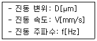
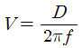
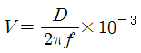
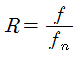
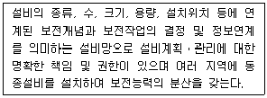

설비보전기사(구) (2021-05-15 기출문제)
1과목: 설비 진단 및 계측
1. 다음과 같이 진동 진폭의 파라미터가 주어졌을 때 관계식으로 옳은 것은?

- V=2πfD
- V=2πfD×10-3


(정답률: 66%)

2. 주파수의 단위로 사용되는 것은?
- cycle/s
- m/s
- rad/s
- m/s2
(정답률: 75%)
3. 푸리에(Fourier) 변환의 특징으로 틀린 것은?
- FFT분석에서는 항상 양부호(positive)의 주파수 성분이 나타난다.
- 충격신호와 같은 임펄스신호(impulse signal)는 푸리에 변환이 불가능하다.
- 시간대역이나 주파수대역에서 유한한 신호는 다른 대역(주파수나 시간)에서 무한한 폭을 갖는다.
- 어떤 대역에서 주기성을 갖는 규칙적인 신호라 할지라도 다른 대역에서는 불규칙한 신호로 나타날 수 있다.
(정답률: 65%)
4. 회전 기계에서 발생하는 이상 현상 중 발생주파수가 중간주파인 것은?
- 공동
- 언밸런스
- 압력 맥동
- 미스얼라인먼트
(정답률: 63%)
5. 용적식 유량계가 아닌 것은?
- 터빈 유량계(turbine flow meter)
- 회전 디스크 유량계(nutation disk flow meter)
- 회전 날개 유량계(rotating vane flow meter)
- 로브 임펠러 유량계(lobed impeller flow meter)
(정답률: 71%)
6. 베어링 소음 발생원에 따른 특성 주파수의 관계식이 옳지 않은 것은? (단, r1=내륜의 반경, r2=외륜의 반경, rB=볼 또는 롤러의 반경, rn=볼 또는 롤러의 수, nr=내륜의 회전속도[rps]이다.)
- 베어링의 편심 혹은 불균형에 의한 회전 소음 주파수 fr=nr
- 볼, 롤러 또는 케이스 표면의 불균일에 의한 소음 주파수

- 볼 또는 롤러의 자체회전에 의한 소음 주파수

- 내륜 표면의 불균일에 의한 소음 주파수

(정답률: 59%)
7. 설비진단의 개념과 가장 거리가 먼 것은?
- 단순한 점검의 계기화
- 수리 및 개량법의 결정
- 신뢰성 및 수명의 예측
- 이상이나 결함의 원인파악
(정답률: 66%)
8. 파장, 주파수에 대한 설명으로 틀린 것은?
- 파장은 음파의 1주기 거리로 정의된다.
- 주파수는 음파가 매질을 1초 동안 통과하는 진동횟수를 말한다.
- 주파수는 소리의 속도에 반비례하고, 파장에 비례한다.
- 파장은 소리의 속도에 비례하고, 주파수에 반비례한다.
(정답률: 65%)
9. 열전대 종류 중 내열성이 좋고 산화성 분위기 중에서도 강하며, 대개 1000℃이상에서 사용되는 것은?
- J type
- R type
- K type
- T type
(정답률: 69%)
10. 진동에서 진폭표시의 파라미터가 아닌 것은?
- 댐퍼
- 변위
- 속도
- 가속도
(정답률: 79%)
11. 고유 진동수와 강제 진동수가 일치할 경우 진폭이 크게 발생하는 현상은?
- 공진
- 울림
- 강제진동
- 반발진동
(정답률: 84%)
12. 극히 작은 전류에 의해서 최대 눈금 편위를 일으킬 수 있으므로, 전압계로 사용하는 계기는?
- 유도형
- 전류력계형
- 가동 코일형
- 가동 철편형
(정답률: 64%)
13. 회전체의 회전수를 측정하기 위하여, 반사 테이프와 광원을 이용하여 반사광을 검출하여 회전수를 구하는 방식은? (문제 오류로 가답안 발표시 4번이 답안으로 발표되었으나, 확정답안 발표시 1번, 4번이 정답 처리 되었습니다. 여기서는 가답안인 4번을 누르면 정답 처리 됩니다.)
- 광전식 검출법
- 주파수 계산법
- 전자식 검출법
- 회전주기 측정법
(정답률: 61%)
14. 회전수 계측 센서 중 광학식 엔코더의 특징이 아닌 것은?
- 처리회로가 간단하다.
- 진동 및 충격에 약하다.
- 고분해능화가 용이하다.
- 디지털 신호이므로 노이즈 마진이 작다.
(정답률: 59%)
15. 시퀀스 제어의 동작을 기술하는 방식 중 조건과 그에 대응하는 조작을 매트릭스형으로 표시하는 방식은?
- 논리회로(logic circuit)
- 플로우 차트(flow chart)
- 동작선도(motion diagram)
- 디시전 테이블(decision table)
(정답률: 60%)
16. 소음 방지 방법이 아닌 것은?
- 차음
- 공명
- 흡음
- 소음기
(정답률: 81%)
17. 강제진동주파수 f와 고유진동주파수 fn의 주파수비

라 할 때 다음 중 고유진동주파수에 대한 진동차단 효과가 가장 높은 것은?- R=1
- R=√2
- R=3
- R=10
(정답률: 59%)
18. 인간의 청감에 대한 보정을 실시하여 소리의 크기 레벨에 근사한 값으로 측정할 수 있도록 한 측정기는?
- 기록계
- 녹음기
- 소음계
- 주파수 분석기
(정답률: 79%)
19. 계측계의 동작특성 중 정특성이 아닌 것은?
- 감도
- 직선성
- 시간지연
- 히스테리스 오차
(정답률: 51%)
20. 제어 장치에 해당하며 목표값에 의한 신호와 검출부로부터 얻어진 신호에 의해 제어 장치가 소정의 작동을 하는데 필요한 신호를 만들어서 조작부에 보내주는 부분을 뜻하는 제어 용어는?
- 외란
- 조절부
- 작동부
- 제어량
(정답률: 69%)
2과목: 설비관리
21. 설비 대장을 작성할 때 구비해야 할 조건 중 거리가 가장 먼 것은?
- 설비 품목별 사양작성자
- 설비의 입수시기 및 가격
- 설비에 대한 개략적인 기능
- 설비에 대한 개략적인 크기
(정답률: 69%)
22. 한계 게이지의 특징으로 틀린 것은?
- 제품의 실제 치수를 읽을 수 없다.
- 측정에 숙련을 요하지 않고 간단하게 사용할 수 있다.
- 소량 제품 측정에 적합하고 불량을 판정하는데 일정 시간이 소요된다.
- 측정 치수가 정해지고 한 개의 치수마다 한 개의 게이지가 필요하다.
(정답률: 55%)
23. 대량생산을 위한 공장자동화와 같이 기계화도가 높은 생산 공정에서 제조간접비를 배부하는 방식은?
- 직접재료비법
- 직접제조비법
- 직접노무시간법
- 기계가동시간법
(정답률: 60%)
24. 공사의 완급도를 결정하기 위하여 고려해야 할 판정기준이 아닌 것은?
- 공사가 지연됨으로써 발생하는 만성로스의 비용
- 공사가 지연됨으로써 발생하는 생산변경의 비용
- 공사를 급히 진행함으로써 발생하는 공수나 재료의 손실
- 공사를 급히 진행함으로써 발생하는 타 공사의 지연에 따른 손실
(정답률: 52%)
25. 설비의 분류에서 판매설비로만 짝지어진 것은?
- 전기 장치, 운반 장치
- 발전 설비, 수처리 시설
- 항만 설비, 공장연구 설비
- 서비스 숍, 서비스 스테이션
(정답률: 77%)
26. 설비 프로젝트의 종류 중 설비의 갱신이나 개조에 의한 경비절감을 목적으로 하는 투자는?
- 확장 투자
- 제품 투자
- 전략적 투자
- 합리적 투자
(정답률: 67%)
27. 다음 설명에 해당하는 설비망은?

- 제품 중심 설비망
- 공정 중심 설비망
- 시장 중심 설비망
- 프로젝트 중심 설비망
(정답률: 63%)
28. 설비의 효율화 저해 로스(loss) 중 설비의 설계 속도와 실제로 움직이는 속도와의 차이에서 생기는 로스는?
- 초기 로스
- 속도 로스
- 고장 로스
- 불량 로스
(정답률: 76%)
29. 일명 공정별 배치라고도 부르며 제품의 종류가 많고 수량이 적으며, 주문생산과 표준화가 곤란한 다품종 소량생산에 적합한 설비배치 형태는?
- 제품별 배치
- 기능별 배치
- 혼합형 배치
- 제품고정형 배치
(정답률: 64%)
30. 보전업무에 대한 기술 기능에서 조건변화에 따른 설비 개량, 설비성능 및 수명향상, 설비의 재설계를 통한 보전도 제고 등에 관련이 있는 것은?
- 고장 분석 개발
- 보전 업무 분석
- 부품 대체 분석
- 보전도 향상 연구
(정답률: 61%)
31. 일반적인 예방 보전의 특징으로 틀린 것은?
- 경제적 손실이 크다.
- 돌발 고장 발생이 생길 수 있다.
- 보전 요원의 기술 및 기능이 강화된다.
- 대수리 기간 중에 발생되는 생산 손실이 크다.
(정답률: 45%)
32. 어떤 설비가 일정 조건 하에서 일정 기간 동안 기능을 고장 없이 수행할 확률은?
- MTBF
- MTTF
- 보전성
- 신뢰성
(정답률: 69%)
33. PM분석에서 P의 의미에 대한 설명으로 가장 적절한 것은?
- 현상을 물리적으로 해석한다.
- 현상의 명확화와 메커니즘을 해석한다.
- 설비의 메커니즘을 분석하고 이해한다.
- 작업방법과 관련성을 추구하는 요인해석의 사고방식이다.
(정답률: 56%)
34. TPM 관리와 전통적 관리를 비교했을 때, TPM 관리의 특징으로 옳은 것은?
- Output 지향
- 결과 중심 시스템
- 개선을 위한 자기 동기 부여
- 제한적이고 터널식인 의사소통
(정답률: 64%)
35. 고장의 분석 후 대책을 세우는 방법으로 틀린 것은?
- 안전율을 높인다.
- 응력을 분산시킨다.
- 강도, 내력을 낮춘다.
- 온도, 습도 등의 작업 환경을 개선한다.
(정답률: 69%)
36. 설비관리의 영역에 포함되지 않는 것은?
- 보전도 향상
- 제품품질개선
- 생산보전활동
- 설비자산관리
(정답률: 62%)
37. 설비의 경제성 평가 방법이 아닌 것은?
- 자본회수법
- 연환지수법
- MAPI 방식
- 비용비교법
(정답률: 51%)
38. 일반적인 자주보전 전개 스텝 7단계 중 5단계에 해당하는 것은?
- 초기청소
- 자주점검
- 자주보전의 시스템화
- 발생원 곤란개소 대책
(정답률: 59%)
39. 치공구 관리 기능 중 계획 단계에 해당하지 않는 것은?
- 공구의 검사
- 공구의 연구 시험
- 공구의 설계 및 표준화
- 공구 소요량의 계획, 보충
(정답률: 48%)
40. 품질관리 도구 중 중심선과 관리한계선을 설정한 그래프로써 품질의 산포를 판별하여 공정이 정상상태인지, 이상상태인지를 판독하기 위한 방법은?
- 관리도
- 체크시트
- 파레토도
- 히스토그램
(정답률: 54%)
3과목: 기계일반 및 기계보전
41. 아베의 원리를 만족하는 측정기는?
- 블록 게이지
- 하이트 게이지
- 외측 마이크로미터
- 버니어 캘리퍼스
(정답률: 64%)
42. 디스크 브레이크에서 기름 누설의 원인으로 옳지 않은 것은?
- 에어빼기 불충분
- 파이프 너트 풀림
- 파이프선단 형상 불량
- 실(seal)의 열화 및 파손
(정답률: 68%)
43. 전동기 베어링부의 발열 원인이 아닌 것은?
- 절연물의 열화에 의한 것
- 윤활제 부족에 의한 것
- 베어링 조립 불량에 의한 것
- 커플링의 중심내기 불량에 의한 것
(정답률: 55%)
44. 벨트 전동장치 중 미끄럼을 방지하기 위해 안쪽표면에 이가 있으며, 정확한 속도가 요구되는 경우 사용하는 것은?
- 보통 벨트
- 링크 벨트
- 타이밍 벨트
- 레이스 벨트
(정답률: 78%)
45. 볼 베어링에서 베어링 하중을 1/2로 하면 수명은 몇 배로 되는가?
- 4배
- 6배
- 8배
- 10배
(정답률: 66%)
46. 회전체의 센터링이 불량할 경우 발생되는 현상으로 틀린 것은?
- 진동이 크다.
- 축의 강도가 향상된다.
- 베어링부의 마모가 심하다.
- 구동력의 전달이 원활하지 못하다.
(정답률: 75%)
47. 배관이음 중 관경이 비교적 크고 내압이 높은 경우 사용하며, 분해조립이 가장 용이한 이음법은?
- 용접이음
- 신축이음
- 납땜이음
- 플랜지이음
(정답률: 78%)
48. 산성 등의 화학 약품을 차단하는 경우에 내약품, 내열 고무제의 격막 판을 밸브시트에 밀어 붙이는 밸브이며, 유체 흐름 저항이 적고 기밀 유지에 패킹이 필요 없으며 부식의 염려가 없는 밸브는?
- 플립 밸브
- 게이트 밸브
- 리프트 밸브
- 다이어프램 밸브
(정답률: 68%)
49. 용접법의 분류 중 용접에 해당하지 않는 것은?
- TIG 용접
- 저항 용접
- 피복 아크 용접
- 서브머지드 아크 용접
(정답률: 66%)
50. 다음 중 비접촉성 실은?
- 오일 패킹
- 메커니컬 실
- 셀프 실 패킹
- 래빌린스 패킹
(정답률: 53%)
51. 보유하고 있는 설비가 신품일 때와 비교하여 점차 열화되어 가는 것을 나타내는 용어는?
- 기술적 열화
- 경제적 열화
- 절대적 열화
- 상대적 열화
(정답률: 49%)
52. 매커니컬 실(mechanical seal)을 선정할 때 주의사항으로 거리가 가장 먼 것은?
- 밀봉면에 작용하는 밀봉력을 유지할 것
- 누유 방지를 위해 탈착이 불가능할 것
- 밀봉 단면의 평행한 평면 상태를 유지할 것
- 밀봉면 사이에서 윤활 유체의 기화를 방지할 것
(정답률: 75%)
53. 나사풀림 방지 방법으로 옳지 않은 것은?
- 록 너트(lock nut)에 의한 방법
- 실(seal) 용접에 의한 방법
- 스프링 와셔 또는 고무 와셔에 의한 방법
- 홈붙이 너트와 분할핀 고정에 의한 방법
(정답률: 70%)
54. 담금질한 강 중의 잔류 오스테나이트를 마텐자이트화 시키는 작업으로 0℃이하의 온도에서 냉각시키는 조작은?
- 침탄법
- 심랭처리
- 항온열처리
- 고주파경화
(정답률: 75%)
55. 원심식과 비교한 왕복식 압축기의 장점은?
- 대용량이다.
- 윤활이 쉽다.
- 압력맥동이 없다.
- 고압 발생이 가능하다.
(정답률: 64%)
56. 유성기어 감속기에 대한 설명으로 옳지 않은 것은?
- 작동 시 구름마찰을 한다.
- 윤활 시 1kW 이하의 소형에는 그리스 윤활을 할 수 있고, 그 이상의 것은 유욕윤활방법이 쓰인다.
- 고정된 내접기어에 유성기어가 맞물려 회전하면서 감속한다.
- 무단변속기와 조합하여 큰 감속비를 얻을 수 있다.
(정답률: 44%)
57. 드릴의 각부 명칭과 그 역할에 대한 설명으로 틀린 것은?
- 생크(shank)- 드릴을 드릴머신에 고정하는 부분
- 사심(dead center)- 드릴 끝 부분으로 가공물을 절삭하는 부분
- 홈 나선각(helix angle)- 드릴의 중심축과 홈의 비틀림이 이루는 각
- 마진(margin)- 드릴의 홈을 따라서 나타나는 좁은 날이며, 드릴을 안내하는 역할
(정답률: 63%)
58. 코일 스프링의 작도법 중 틀린 것은?
- 일반적으로 무하중 상태에서 그린다.
- 스프링이 왼쪽 감김일 경우 감김 방향을 명기한다.
- 스프링의 중간부분 일부를 생략할 경우에는 생략하는 부분의 선지름의 중심선을 가는 1점 쇄선으로 나타낸다.
- 스프링의 종류, 모양만을 도시할 경우 굵은 1점 쇄선을 사용한다.
(정답률: 44%)
59. 금긋기 작업에서의 유의사항으로 옳지 않은 것은?
- 금긋기 선은 굵고 선명하도록 반복하여 긋는다.
- 기준면과 기준선을 설정하고 금긋기 순서를 결정한다.
- 같은 치수의 금긋기 선은 전후, 좌우 구분없이 한번만 긋는다.
- 금긋기 선의 굵기는 일반적으로 0.07~0.12mm이다.
(정답률: 74%)
60. 펌프 운전 중 물이 처음에는 나오다가 곧 나오지 않을 때의 원인으로 옳지 않은 것은?
- 웨어링이 마모되었기 때문에
- 마중물이 충분하지 못하기 때문에
- 흡입양정이 지나치게 높기 때문에
- 배관 불량으로 흡입관 내에 에어 포켓이 생겼기 때문에
(정답률: 60%)
4과목: 윤활관리
61. 윤활유의 열화 판정 중 직접 판정법에 대한 설명으로 틀린 것은?
- 신유의 성상을 사전에 명확히 파악한다.
- 사용유의 대표적 시료를 채취하여 성상을 조사한다.
- 투명한 2장의 유리판에 기름을 넣고 투시해서 이물질의 유무를 조사한다.
- 신유와 사용유의 성상을 비교 검토 후 관리기준을 정하고 교환하도록 한다.
(정답률: 59%)
62. 윤활유를 샘플링하여 검사할 때 검사항목과 가장 거리가 먼 것은?
- 색상
- 수분
- 부식도
- 전산가
(정답률: 44%)
63. 윤활 관리 조직의 체계를 윤활관리부서와 윤활실시부서로 구분할 때 윤활관리부서에서 실시하는 업무로 가장 적합한 것은?
- 오일의 교환 주기 결정
- 급유 장치의 예비품 관리
- 윤활 대장 및 각종 기록 작성
- 윤활제 선정 및 열화 기준의 판정
(정답률: 54%)
64. 두 개 이상의 물체가 서로 상대운동을 할 때 물체 표면에서 발생하는 과학적 현상으로, 마찰과 마모 및 윤활을 다루는 학문을 지칭하는 것은?
- Friction
- Tribology
- Lubrication
- Maintenance
(정답률: 59%)
65. 일반적으로 베어링의 윤활에서 그리스 윤활이 윤활유 윤활보다 장점인 특성은?
- 밀봉성
- 냉각효과
- 회전저항
- 순환급유
(정답률: 70%)
66. 윤활설비의 고장과 원인에서 작업에 의한 고장원인이 아닌 것은?
- 플러싱의 불충분
- 과잉급유 및 부주의
- 급유가 빠르거나 너무 느림
- 높은 전도열 및 마찰면의 불충분한 방열
(정답률: 50%)
67. 내수성이 나빠 수분과의 접촉이 없고, 일반 및 고온 개소에 적절한 그리스는?
- 칼슘계 그리스(Ca Base Grease)
- 리튬 복합 그리스(Li-Cx Grease)
- 나트륨계 그리스(Na Base Grease)
- 알루미늄계 그리스(Al Base Grease)
(정답률: 60%)
68. 다음 기어의 손상 중 윤활유의 성능과 가장 관계있는 것은?
- 피팅(pitting)
- 파단(breakage)
- 스폴링(spalling)
- 스코어링(scoring)
(정답률: 54%)
69. 베어링 윤활에서 윤활유와 비교한 그리스 윤활의 특징으로 틀린 것은?
- 급유 간격이 짧다.
- 회전 저항이 크다.
- 순환 급유가 곤란하다.
- 혼입물 제거가 곤란하다.
(정답률: 56%)
70. 유압 작동유가 갖추어야 할 성질이 아닌 것은?
- 체적 탄성계수가 클 것
- 캐비테이션이 잘 일어날 것
- 산화 안정성 및 유화 안정성이 클 것
- 온도 변화에 따른 점도 변화가 적을 것
(정답률: 70%)
71. 윤활유의 물리화학적 성질 중 가장 기본이 되는 것으로 액체가 유동할 때 나타나는 내부저항을 의미하는 것은?
- 점도
- 인화점
- 발화점
- 유동점
(정답률: 62%)
72. 마찰열로 인한 베어링의 고착 등을 방지하기 위해 유막을 형성하여 주는 윤활유의 작용은?
- 감마작용
- 청정작용
- 방청작용
- 응력분산작용
(정답률: 60%)
73. 다음 중 경하중 또는 보통하중을 받고 있는 평기어, 헬리컬기어, 베벨기어의 윤활제로 가장 적합하고, 녹 방지와 산화방지제가 첨가된 윤활유는?
- 극압 윤활유
- 전기 절연유
- R&O 윤활유
- 개방형 기어유
(정답률: 64%)
74. 그리스의 내열성을 평가하는 기준이 되고 그리스 사용온도가 결정되는 윤활제의 성질은?
- 주도
- 적점
- 이유도
- 혼화안정도
(정답률: 63%)
75. 압축공기를 이용하여 소량의 오일을 미스트화시켜 베어링, 기어, 체인 드라이브 등에 윤활을 하고, 압축공기는 냉각제 역할을 하도록 고안된 윤활방식은?
- 적하 급유법
- 패드 급유법
- 심지 급유법
- 분무식 급유법
(정답률: 69%)
76. 윤활제의 기능과 관계가 없는 것은?
- 냉각작용
- 산화작용
- 마찰감소 작용
- 마모감소 작용
(정답률: 68%)
77. 압축기의 내부 윤활유의 요구 성능으로 가장 거리가 먼 것은?
- 부식 방지성이 좋을 것
- 적정한 점도를 가질 것
- 산화안정성이 양호할 것
- 생성 탄소가 경질일 것
(정답률: 72%)
78. 윤활제의 공급법 중 순환급유법이 아닌 것은?
- 바늘 급유법
- 비말 급유법
- 유욕 급유법
- 원심 급유법
(정답률: 55%)
79. 극압 윤활에 대한 설명으로 틀린 것은?
- 충격하중이 있는 곳에 필요하다.
- 완전 윤활 또는 후막 윤활이라고도 한다.
- 첨가제로 유황, 염소, 인 등이 사용된다.
- 고하중으로 금속의 접촉이 일어나는 곳에 필요하다.
(정답률: 50%)
80. 윤활유가 유화되는 원인이 아닌 것은?
- 수분과의 접촉이 없을 때
- 기름의 산화가 많이 일어났을 때
- 윤활유가 열화하여 이물질분이 증가되어 고점도유에 이르렀을 때
- 운전조건이 가혹해서 탄화수소분의 변질을 가져왔을 때
(정답률: 68%)
5과목: 공유압 및 자동화
81. 미리 정해진 순서에 따라 동일한 유압원을 이용하여 여러 가지 기계 조작을 순차적으로 수행하는 회로는?
- 증압 회로
- 시퀀스 회로
- 언로드 회로
- 카운터 밸런스 회로
(정답률: 74%)
82. 실린더를 선정할 때 주요 고려사항이 아닌 것은?
- 스트로크
- 유압 펌프의 종류
- 실린더의 작동속도
- 부하의 크기와 그것을 움직이는 데 필요한 힘
(정답률: 63%)
83. 부하에 전기 에너지를 공급하기 위해서는 도체를 통해 전원에서 부하까지 전류가 흘러야한다. 이때 이 전류의 크기에 영향을 미치는 요소가 아닌 것은?
- 도체 저항
- 부하 저항
- 전원 저항
- 절연 저항
(정답률: 56%)
84. 비중에 관한 설명으로 옳은 것은?
- 비중은 무차원 수이다.
- 단위는 N/m3을 사용한다.
- 물의 밀도를 측정하고자 하는 물질의 밀도로 나눈 값이다.
- 표준대기압 0℃ 물의 비중량에 대한 비로 표시한다.
(정답률: 51%)
85. 기체의 온도를 일정하게 유지하면서 압력 및 체적이 변화할 때, 압력과 체적은 서로 반비례한다는 법칙은?
- 보일의 법칙
- 샤를의 법칙
- 베르누이 법칙
- 보일-샤를의 법칙
(정답률: 60%)
86. 단상 유도 전동기가 저속으로 회전될 때의 원인으로 옳은 것은?
- 퓨즈 단락
- 베어링 불량
- 서머 릴레이 작동
- 코일의 소손
(정답률: 49%)
87. 공기압축기의 운전방법 중 압력 릴리프 밸브를 사용하는 방법은?
- 배기 조절
- 흡입 조절
- 그립-암 조절
- ON/OFF 조절
(정답률: 61%)
88. 간헐 반송기기에 해당하는 것은?
- 무인 반송차
- 체인 컨베이어
- 벨트 컨베이어
- 드라브인 래크
(정답률: 68%)
89. 공기압 유량제어밸브에 대한 설명으로 틀린 것은?
- 공기압 회로의 유량을 조정하고자 할 때 사용하는 것은 교축 밸브이다.
- 공기압 실린더의 속도제어를 위해 방향제어밸브와 실린더의 중간에 설치하는 것은 속도제어밸브이다.
- 공기압의 속도제어는 배기 교축에 의한 속도제어 회로를 주로 채택한다.
- 공기압 실린더의 배기 유량을 감소시켜 실린더의 속도를 증가시키는 것은 급속 배기 밸브이다.
(정답률: 51%)
90. 공기압 및 유압에 관한 설명으로 틀린 것은?
- 공기압은 인화나 폭발의 위험이 없다.
- 공기압은 공기탱크에 에너지를 저장할 수 있다.
- 유압은 위치 제어성이 우수하고, 이송 속도도 매우 빠르다.
- 유압은 가스나 스프링 등을 이용한 축압기에 소량의 에너지 저장이 가능하다.
(정답률: 57%)
91. 유압 회로 중 최고 압력을 제한하여 회로내의 과부하를 방지하는 유압기기는?
- 셔틀밸브
- 체크밸브
- 릴리프밸브
- 디셀러레이션 밸브
(정답률: 63%)
92. 비용적형 유압펌프가 아닌 것은?
- 원심펌프
- 축류펌프
- 피스톤펌프
- 사류펌프
(정답률: 50%)
93. 순차적인 작업에서 전 단계의 작업완료 여부를 리밋 스위치나 센서 등을 이용하여 확인한 후 다음 단계의 작업을 수행하는 제어는?
- 논리 종속 시퀀스 제어
- 동기 종속 시퀀스 제어
- 시간 종속 시퀀스 제어
- 위치 종속 시퀀스 제어
(정답률: 47%)
94. 무인 반송차(AGV)의 특징으로 틀린 것은?
- 보관 능력이 향상된다.
- 레이아웃의 자유도가 크다.
- 정지 정밀도를 확보할 수 있다.
- 자기 진단과 컴퓨터 교신 기능이 있다.
(정답률: 52%)
95. 공기압 작업요소의 설명이 틀린 것은?
- 격판 실린더는 격판에 부착된 피스톤 로드가 미끄럼 실링 되어있다.
- 회전 실린더는 피니언과 랙 등의 구조를 이용하여 회전 운동을 할 수 있다.
- 탠덤 실린더는 2개의 복동 실린더가 1개의 실린더 형태로 된 것이다.
- 다위치제어 실린더는 2개 또는 그 이상의 복동 실린더로 구성된다.
(정답률: 43%)
96. 유도형 센서의 특징이 아닌 것은?
- 전력 소모가 적다.
- 자석 효과가 없다.
- 감지 물체안에 온도 상승이 없다.
- 비금속재료 감지용으로 사용한다.
(정답률: 56%)
97. 방향 제어 밸브 조작 방식 명칭과 기호의 연결이 틀린 것은?
- 전자 방식 -

- 페달 방식 -

- 플런저 방식 –

- 누름버튼 방식 –

(정답률: 57%)
98. 공유압 변환기의 사용 시 주의사항으로 적절한 것은?
- 수평방향으로 설치한다.
- 발열장치 가까이 설치한다.
- 반드시 액추에이터보다 낮게 설치한다.
- 액추에이터 및 배관 내의 공기를 충분히 뺀다.
(정답률: 58%)
99. 오일 탱크에 관한 설명으로 틀린 것은?
- 오일 탱크의 크기는 펌프 토출량과 동일하게 제작한다.
- 에어 블리저 용량은 펌프 토출량의 2배 이상으로 제작한다.
- 스트레이너 유량은 펌프 토출량의 2배 이상의 것을 사용한다.
- 오일 탱크의 유면계를 운전할 때 잘 보이는 위치에 설치한다.
(정답률: 67%)
100. 제어량이 온도, 압력, 유량, 액면 등과 같은 일반 공업량일 때 발생하는 신호의 형태에 의한 제어는?
- 2진 제어
- 논리 제어
- 디지털 제어
- 아날로그 제어
(정답률: 62%)